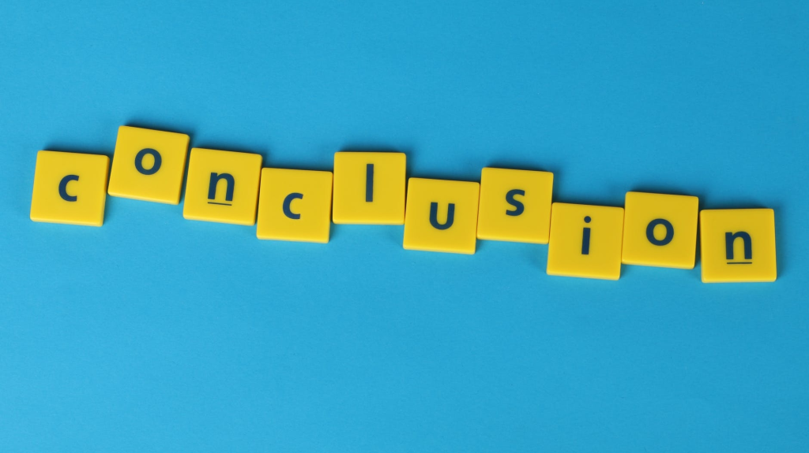

Almost a year ago I published an article “6 Tips for Coping with COVID-Related Anxiety” with PsychReg, you can read it here. Now I’m in quarantine. Did I take my own advice? Did my tips really work?
Tip 1: Keep Your Day Structured
Hm. I will own it. I am not so good at this one. I tried. Initially I wrote out an entire daily schedule down to the hour. That lasted for not even one day. What can I say, I’m not a detail-oriented person. I’ve found I prefer to stick to a loose structure that allows for a lot of flexibility. However, I would imagine that a detailed schedule would help the many people who prefer a structured day and like the feeling of having a schedule. I don’t really like that feeling, it feels confining, and being in quarantine you’re already quite literally confined.
For me, it’s enough to have the structure that comes with the parental responsibilites of having a 5- and a 6-year-old kid. They need to eat scheduled meals and such, so needing to take care of them puts me on a schedule anyway. If I lived alone and didn’t have those two adorable responsibilities, I imagine keeping to a schedule would have been way more difficult, and more important.
Related to schedules, I found that getting myself ready for the day anyway, even though I was just going to be at home, was helpful. The first few days of quarantine, I was in the “not going anywhere so screw it” mentality. I might have been feeling a bit overwhelmed with the news. That said, after a day or so, I metaphorically gave myself a wake-the-F-up kick in the ass, and forced myself to get it together anyway. That meant new clean clothes, shower, hair, makeup, breakfast, all the stuff that you want to throw out the window when youre anxious, depressed, and overwhelmed. Still ditched the bra though. Otherwise, those things done, the days were better.
I suppose you could call this the checklist method, making a list of what needs to be accomplished each day. Similar to a schedule but without that annoying time thing to stick to. Perhaps throw a few deadlines in for some semi-structure. For example, I tried to have myself together by the time the kids ate lunch at noon. But maybe that would be super simple for you because you’re an ace at timeliness. The point is that you make a plan specific to both your needs and the needs of your housemates.
Whatever you decide to do, don’t decide alone. Every member of the family has to be on board for it to work, so make sure everyone gets at least a little input, even the kids.
When it comes to schedules and making a plan of action during quarantine, it’s important to communicate with your family members and roommates to find even ground and work together. That way everyone feels comfortable with the schedule and plan, and it’s more likely to work. And lower your anxiety.
If everyone is involved, they’ll be more invested and therefore more likely to follow the schedule. Theoretically. We didn’t make it this far. Live and learn.
Tip 2: Schedule Relaxation Time
Hm. I will own it. I am not so good at this one. I tried. Initially I wrote out an entire daily schedule down to the hour. That lasted for not even one day. What can I say, I’m not a detail-oriented person. I’ve found I prefer to stick to a loose structure that allows for a lot of flexibility. However, I would imagine that a detailed schedule would help the many people who prefer a structured day and like the feeling of having a schedule. I don’t really like that feeling, it feels confining, and being in quarantine you’re already quite literally confined.
This is my favorite general life tip, one that is very important to remember during a quarantine. If I do not do this, I end up with a way less successful and productive day. Taking breaks to be alone and relax without interruption are completely necessary for my psychological well-being (especially key as a mother, because the “mom! mom! mom!” never stops, amiright?). I need time to de-compress, especially as someone with dysautonomia and PTSD. I need to give my brain and body breaks to calm down. It’s also an introvert thing. We recharge by being alone.
Once you get that alone time, use it wisely. This is where you insert your favorite ways to cope and relax. Don’t get lost scrolling through Facebook when you meant to do a 20 minute mindfulness meditation. Taking purposeful action to focus on relaxing is a necessity for a happy quarantine, also, a happy life.
Setting time aside to decompress and focus on relaxing is an effective way to reduce anxiety, so says science. If you aren’t actually doing this yet, do it. Its life changing.
Tip 3: Schedule Time to be Anxious
When I started to write this, reviewing the original article, I initially thought “oops, here’s another one I don’t do.” But then I realized that I do in fact use this tip, but in a slightly less “scheduled” way, and I continued to use it to help me cope during quarantine.
I try to write down whatever is making me anxious. This is time set aside to focus on the problem and clarify all my worries and fears; it is time for organizing my thoughts. If I don’t do this, the thoughts just circle around, rattling inside my brain, creating more chaos. I dont need any more of that, there’s enough going on in there already. So I get it out by writing. Other people might take time to talk about it with a friend or family member. Or perhaps reading or watching the latest news updates.
The important part here is that you process your thoughts related to COVID (or any cause for anxiety), and then let them go. And plan ahead of time to do this. Do not immerse yourself in it. Allow time to deal and cope directly, and then step away.
So don’t keep checking in for news updates. If a friend calls up and starts talking about the latest COVID theories, but you’ve already spent enough time thinking on the subject, say so.
Also, this time you set aside doesn’t need to be every day. It depends on your needs. It could be a “one and done” process for you, just taking time occasionally when there is new information or something new has happened. Or it could be several times a day. The important part is to cope directly and then step away.
Tip 4: Remain Social
Humans are social creatures. Our brains need social interaction and feedback. Since it’s harder to be social now, its a lot easier to just let it go and not bother. But this is not the best decision. Isolating yourself socially leads to more loneliness, which leads to feeling more depressed, and then some. Science shows isolating and decreasing social interactions makes your psychological and physical well-being worse. There isn’t an arguement there. So figure out how much social interaction you need and make sure to maintain it.
Technology has come out with some cool shizz to make it easier to be social virtually. There are a lot of video and game apps that allow you to engage with others socially, but from afar. Or get traditional and take time to message your friends, or go really old school and make a phone call or two. Make the extra effort, its important for keeping a healthy mind.
The amount of social interaction we need varies from individual to individual. I am an introvert, and social experiences, while they are needed and enjoyed, also exhaust me. In quarantine, with a husband and two kids, its hard to get alone time unless its not purposefully aside.
To get that alone time, you might need to establish and discuss rules and boundaries with your housemates (kids, roomates, family members, etc). To do that, be real with them about your need to be alone, and also be clear this has nothing to do with them. Then remind them that you love them very much even when you are taking time alone. That done, go be alone and let go of any guilt. Enjoy being alone.
Upon reflection, I should have included the importance of alone time and boundaries in the original article. But now you know.
Tip 5: Use Positive Self-Talk
My self-talk statements from the original article are as follows:
- I will be OK.
- The people I love will be OK
- I will adapt to these changes successfully
- COVID will someday be a memory; this won’t last forever
- I have handled tough shit before and I can do it again.
These are good ones. I still like these. I admit, my brain likes to argue a lot with the “I will be OK” statement, but I’ve taken the time to work it out, and the evidence largely supports that it is true.
Here’s how I’ve worked it out, to come to actually believe that first statement. Also, keep in mind that “OK” is subjective, so what might be OK to me might not be for someone else. Anyway, here’s why I believe the thought “I will be OK”:
“Things in my life have generally worked out OK in the end, even if not as I expected, it was still alright. The world didn’t end. I, as a human, am able to figure out how to overcome even seemingly insurmountable obstacles. Life might suck for awhile, but I know I will eventually overcome the problem. I know because I have done so repeatedly in the past, and there is no reason to think I will not overcome whatever else life throws at me. I have proven my ability to face some serious shit and come out the other side still breathing. I know now that I have the ability to be resilient, and I have to remind myself its not a one-time thing. Its a skill that I now have developed. Research says so.”
So there you go. One individual’s example of an argument for the statement “It will be OK.” We in the CBT World call that thought evaluation technique “Evidence For (And Against)” We like obvious labels, obviously. The nice thing about our brains is, once you work it out one time, you can remind yourself with the short statement “it will be ok”, and you know what that means. You dont have to re-figure it out every time. It can help even more if you write down what you come up with and then review it when you are struggling.
Having to be resilient and trudge through the shit life throws at you is part of the human condition, so you all have probably developed some resliency too. Post Traumatic Growth (PTG) is actually a thing, people. We already knew surviving life’s hardships often make us even better, but now the science backs up the belief. That’s right, research now supports the old adage “what doesnt kill you makes you stronger.” If you haven’t had a major life altering trauma that’s okay. Resiliency and PTG can develop from other types of traumas too, like surviving a quarantine during a pandemic. You see what I’m getting at (wink, wink, nudge, nudge). If your interest has been peaked, there are many things you can do to build up your resiliency.
Tip 6: If These Tips Don’t Help, Consider Seeing a Pro
I was already working with a therapist when the pandemic began, and we needed to switch to video sessions. At first I hated it. But now I think I’m okay with the video therapy. Its different. I think there are energies at play in an in-person interaction that can make therapy more powerful. (Don’t believe me? Pay attention to how your body feels and moves interacting with someone virtually verses in person. It feels different. It just does. I don’t know all the science behind that yet. But there’s something.)
That said, therapy is still helping me. It is still effective. I am able to do the work I need. And I wont lie about how much I appreciate the convenience of doing it from my own home.
I hope that others have had an easy switch to virtual therapy, and that if you want to try therapy, but aren’t so sure about the video part, perhaps give it a try anyway, its not so bad. And therapy doesn’t need to be some lifetime committment. If you just want some help adjusting to all of this, it might be only one, two sessions. Brief therapy can be beneficial, especially for anxiety or depression that comes up from adjusting to something new (e.g. living in a pandemic).
Conclusions
There ya have it, folks. I’ve mostly followed my own tips, adapting them to my personal needs, and they’ve helped. The times I neglected these things, I did worse. I even would suggest a new (sub)tip: to set aside alone time when needed. I also want to recognize that these tips are harder if you don’t have access to the technology.
Discussion
What other non-tech suggestions do you have? Do you have other things you do to help? What problems have you run into? Do these tips work for you? It’s pretty easy to try them and see for yourself. Share your thoughts!
Referenced Articles
Chatterjee, R. (2021). How to Survive the Pandemic Winter: 9 Creative Ways to Socialize Safely. NPR.
Greenberg, R. P. PhD, Mantosh J. Dewan, MD (2009). Brief Psychotherapies: Potent Approaches to Treatment. Psychiatric Times, 26, (3).
https://www.psychiatrictimes.com/view/
brief-psychotherapies-potent-approaches-treatment
Manzoni, G.M., Pagnini, F., Castelnuovo, G. et al. (2008) Relaxation training for anxiety: a ten-years systematic review with meta-analysis. BMC Psychiatry 8, 41. https://doi.org/10.1186/1471-244X-8-41
Novotney (2019). The risks of social isolation: Psychologists are studying how to combat loneliness in those most at risk, such as older adults. Monitor On Psychology, 50, (5) https://www.apa.org/monitor/2019/05/ce-corner-isolation